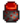

Henchman
(Redirected from Goblin)
Jump to navigation
Jump to search
| Henchman | |
| Information
| |
| Birthday | Unknown |
| Lives In | Witch's Swamp |
| Address | N/A |
| Marriage | No |
| Loved Gifts |  Void Mayonnaise |
| “ | “I'm sorry, but I can't let you pass... I'd lose my job.” |
| — Henchman |
The Henchman is a goblin that guards the Witch's Hut inside the Witch's Swamp. Players will encounter him after travelling to the swamp, but cannot pass around him.
Discovering how to get past the Henchman is the objective of the quest Goblin Problem. A lost book at the library reveals that Goblins love Void Mayonnaise, so after being given Void Mayonnaise he'll despawn from the map, allowing the player to pass and enter the Witch's Hut. He is not encountered again after the quest is completed.
Quests
The questline to access the Witch's hut involves two quests, which become available after completing all of the Community Center or Joja Warehouse tasks.
| Quest Name | Quest Text | Provided By | Requirements | Rewards |
|---|---|---|---|---|
| Goblin Problem | There's a goblin blocking the path to the Witch's hut. There must be some way to get him to move... Perhaps I should seek out more information on Goblins. | Through the cave by the Railroad after completing the Dark Talisman quest. | Speak to the Henchman outside the Witch's hut and give him Void Mayonnaise as a gift. |
|
Portraits
History
- 1.1: Introduced.
| Villagers | |
|---|---|
| Bachelors | Alex • Elliott • Harvey • Sam • Sebastian • Shane |
| Bachelorettes | Abigail • Emily • Haley • Leah • Maru • Penny |
| Townspeople | Caroline • Clint • Demetrius • Evelyn • George • Gil • Gunther • Gus • Jas • Jodi • Kent • Lewis • Linus • Marlon • Marnie • Pam • Pierre • Robin • Vincent • Willy |
| Other | Birdie • Bouncer • Dwarf • Fizz • Governor • Grandpa • Henchman • Junimos • Krobus • Leo • Morris • Mr. Qi • Old Mariner • Professor Snail • Sandy • Wizard |